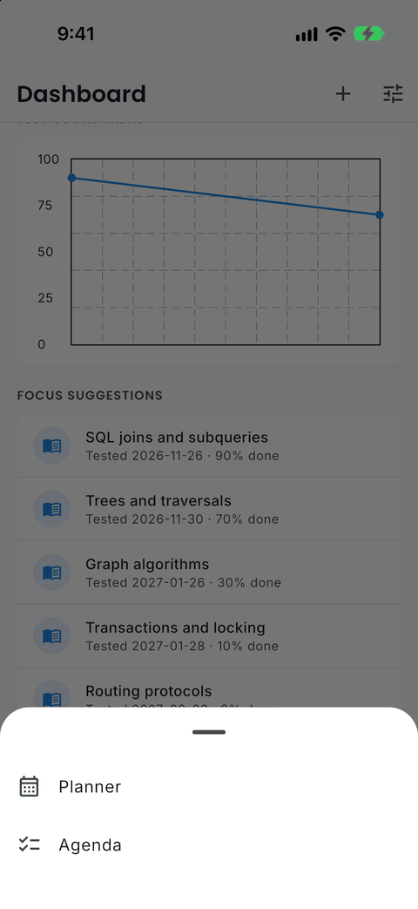
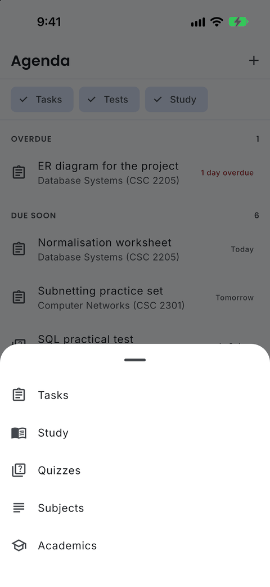
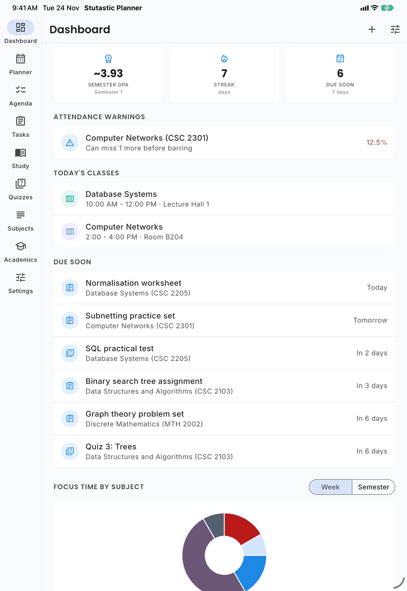
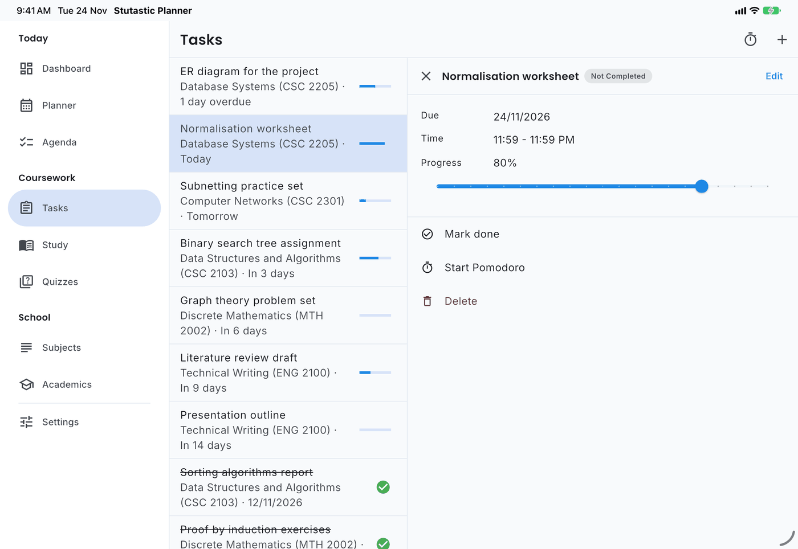

Getting around¶
Stutastic Planner has nine screens. The layout changes with the width of the screen or window, but the screens are the same everywhere:
| Screen | What it's for |
|---|---|
| Dashboard | Today's classes, what's due, attendance warnings and your study summaries |
| Planner | Your timetable and calendar by day, week or month |
| Agenda | Everything due, overdue first, in one list |
| Tasks | Assignments and other work with a due date |
| Study | Revision topics, grouped by subject |
| Quizzes | Quizzes, tests and final exams |
| Subjects | Each subject's details, schedule, attendance, work and grades |
| Academics | Programmes, years, semesters, GPA and CGPA |
| Settings | Preferences, reminders, account and backups |
On a phone¶
The bar at the bottom has four buttons: Dashboard, Planner, Coursework and Settings. Planner and Coursework hold more than one screen. Tap one to choose:
- Planner → Planner or Agenda;
- Coursework → Tasks, Study, Quizzes, Subjects or Academics.


Tap + at the top of a screen to add something, and tap a row to open its details.
On a tablet or a wider window¶
On an iPad, an Android tablet, or a desktop window of medium width, every screen has its own button in a rail down the left side.

On wider screens, such as an iPad in landscape or a large desktop window, the rail opens out into a labelled sidebar in three groups: Today (Dashboard, Planner, Agenda), Coursework (Tasks, Study, Quizzes) and School (Subjects, Academics).
Lists also show the selected item beside them, so you can go down a list without opening and closing each one. Nothing selected shows until you pick a row.

Keyboard shortcuts¶
With a keyboard attached (a Mac, Windows or Linux computer, an iPad or Android tablet with a keyboard, or the web app), these shortcuts work anywhere in the app. On a Mac, an iPad, or the web app on a Mac, use the first column; on Windows, Linux and Android, use the second.
| Action | Mac and iPad | Windows, Linux and Android |
|---|---|---|
| New task | ⌘N | Ctrl+N |
| New event | ⇧⌘N | Ctrl+Shift+N |
| New class | ⌥⌘C | Ctrl+Alt+C |
| New quiz | ⌥⌘Q | Ctrl+Alt+Q |
| New study topic | ⌥⌘S | Ctrl+Alt+S |
| Go to a screen, in the order of the table above | ⌘1 to ⌘9 | Ctrl+1 to Ctrl+9 |
| Planner: day, week or month view | ⌃⌘1, ⌃⌘2, ⌃⌘3 | Alt+1, Alt+2, Alt+3 |
| Planner: today | ⌘T | Ctrl+T |
| Planner: previous or next | ⌘[ and ⌘] | Ctrl+[ and Ctrl+] |
| Back | ⌘← | Ctrl+← |
| Settings | ⌘, | Ctrl+, |
| Start a focus session | ⇧⌘F | Ctrl+Shift+F |
| Pause or resume the focus timer | Space | Space |
| Skip to the next focus phase | ⌥⌘→ | Ctrl+Alt+→ |
| Finish the item you're focusing on | ⌥⌘↩ | Ctrl+Alt+Enter |
In a list with its details beside it, ↑ and ↓ move the selection, Return (Enter) opens the selected item for editing, and Delete (Backspace) deletes it after asking.
The "new" shortcuts need a semester to add to. Shortcuts never take over while you're typing in a field.
On a Mac¶
The Mac app has a full menu bar with the same commands: File for adding items and Import Timetable…, View for screens and Planner views, Go for moving through the Planner, Focus for the timer, and Help, which opens this site. Right-click a row in a list for its actions, such as Mark done on a task.
On Linux¶
Planner keeps running in the system tray when you close its window, so reminders still arrive. Click the tray icon to bring the window back, or right-click it for its menu. Two switches in Settings → Reminders control this: Start at login and Keep running in the tray. Reminders arrive only while Planner is running.